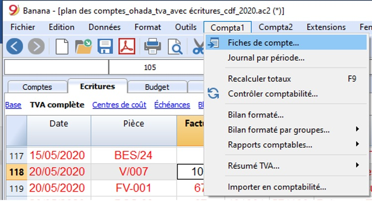
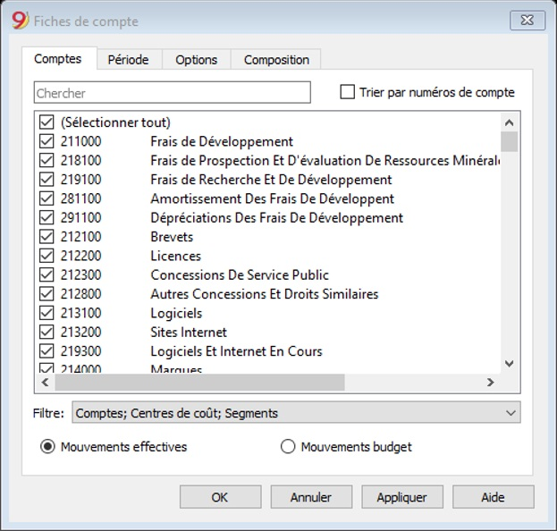
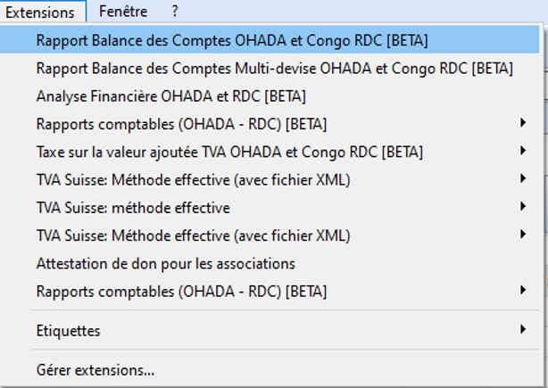
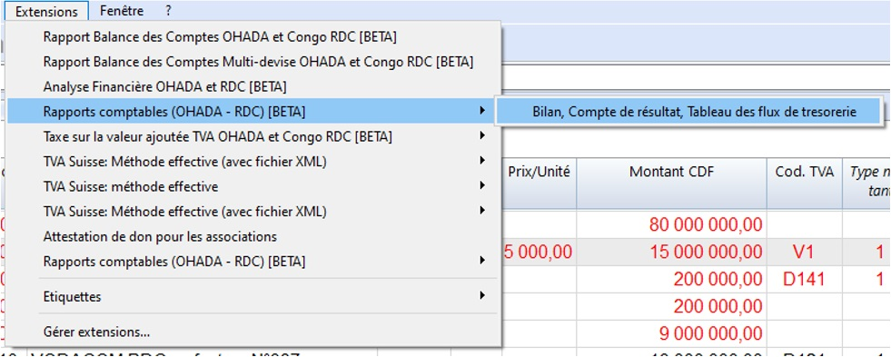

Activité 7: Edition des Grand Livre, Balance et états financiers
Contenu:
A. Fiche Pédagogique
1. Objectifs spécifiques :
Au terme de cette activité, le participant sera capable d’éditer ou d’imprimer le grand livre, la balance et les états financiers.
2. Supports :
-
OHADA, Acte uniforme relatif au droit comptable et à l’information financière et système comptable OHADA, Yaoundé le 15 février 2017 ;
-
Guide d’application OHADA ;
-
EPSP, DIPROMAD, Curriculum des Humanités Techniques Commerciales, Commerciale et Gestion, Kinshasa 2014 ;
-
SERNAFOR Technique, module de formation sur le système comptable OHADA niveau 4, 2018 ;
3. Méthodes et techniques :
Exposé, discussion dirigée, brainstorming et travail de groupe.
4. Durée :
120 minutes
5. Déroulement de l’activité :
| N° | Tâches | Méthodes et Techniques | Durée |
|---|---|---|---|
| 1 | Présenter l’activité et ses objectifs | Exposé | 5 min. |
| 2 | Expliquer la procédure d’édition des Grand Livre, Balance et états financiers | Brainstorming | 30 min. |
| 3 | Constituer des sous-groupes pour éditer les Grand Livre, Balance et états financiers à l’aide des certaines données chiffrées | Travail en groupe | 55 min. |
| 4 | En plénière : le rapporteur de chaque sous-groupe présente la production de son équipe suivie de mise en commun avec les membres des autres sous-groupes et du facilitateur. | Discussion dirigée | 20 min. |
| 5 | Questions de synthèse Comment se fait l’édition de (du) : Grand Livre, Balance et états financiers. |
Discussion dirigée | 10 min. |
B. Fiche Technique
1. Le Grand Livre
Pour éditer un grand livre dans le logiciel banana on procède comme suit :
-
Cliquer sur menus Compta1
-
Cliquer sur fiches des comptes

Dans la boîte de dialogue fiches des comptes ci-dessous, cocher le comptes voulu (pour avoir un seul grand livre) ou cocher sélectionner tout pour avoir l’ensemble du grand livre (dans l’onglet comptes).
N.B : Si nous voulez avoir le grand livre d’une période spécifique qui n’est pas l’année :
- cliquer dans l’onglet période puis cocher ✅ sur période spécifique et déterminer la période (janvier ou février, 1er trimestre ou 4ème trimestre ; …)

2. La Balance
Pour éditer la balance modèle OHADA dans le logiciel banana on procède de la manière suivante :
-
Aller sur menu extensions ;
-
Cliquer sur rapport balance des comptes OHADA et Congo RDC ou sur rapport balance des comptes multidevises OHADA et Congo RDC pour la comptabilité multidevises
Pour spécifier la période ; cocher ✅ sur période spécifique et déterminer la période (janvier ou février, 1er trimestre ou 4ème trimestre ; …)

3. Les états financiers (Bilan, Compte de Résultat et Tableau des flux de Trésorerie)
Pour éditer la balance modèle OHADA dans le logiciel banana on procède de la manière suivante :
- Aller sur menu Extensions ;
Cliquer sur Rapport Comptable (OHADA - RDC) et ensuite sur Bilan, Compte de résultat, Tableau des flux de trésorerie

Last modified: 2020-10-07 16:58:55 +0200 CEST